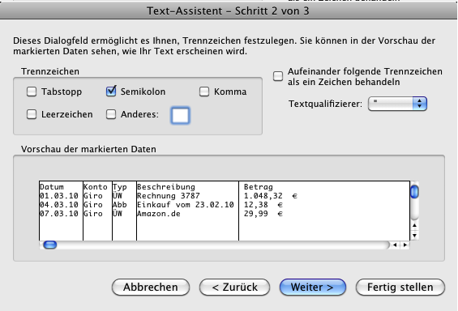
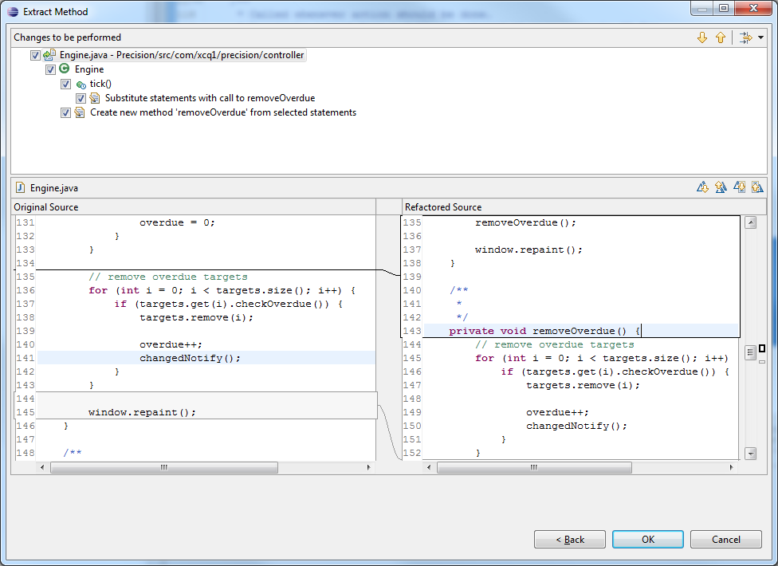

| Usability Pattern | Vorschau |
|---|---|
| Alias | Preview |
| Problem | Benutzer möchten vor Ausführung einer irreversiblen oder langdauernden Aktion wissen, welche Resultate die Aktion haben wird. |
| Lösung |
Biete Benutzern eine Vorschau auf die voraussichtlichen Resultate der Aktion, ohne die Aktion vollständig auszuführen oder Änderungen durchzuführen. Zeige vor allem in solchen Fällen eine Vorschau auf die Resultate einer Aktion, wenn die Ausführung der Aktion lange dauert oder Benutzer die Aktion nicht oder nur mit größerem Aufwand rückgängig machen können. Benutzer können mit Hilfe der Vorschau beurteilen, ob die Ausführung der Aktion die von ihnen erwarteten Resultate bringt. Wenn die Resultate der Aktion vorab nicht genau bekannt sind (z. B. bei komplexen Berechnungen) oder sehr umfangreich sind (z. B. bei der Verarbeitung großer Datenmengen), kann als Vorschau eine Abschätzung oder ein Auszug der tatsächlichen späteren Resultate angezeigt werden. Erlaube Benutzern in jedem Fall, die Ausführung der Aktion nach Anzeige der Vorschau abzubrechen, wenn sie mit den voraussichtlichen Ergebnissen nicht zufrieden sind. |
| Illustration | Ein Tabellenkalkulationsprogramm erlaubt Benutzern den Import von Daten aus Text- und CSV-Dateien (comma-separated values). Jede Zeile in diesen Dateien wird dabei als einzelner Datensatz interpretiert, der aus mehreren, durch ein oder mehrere Trennzeichen (z. B. Leerzeichen, Komma, Semikolon oder Tabulator) getrennten Datenfeldern besteht. Häufig ist jedoch unklar, welche Trennzeichen in einer bestimmten Datei verwendet wurden. Im Import-Dialog zeigt das System deshalb zunächst einen Ausschnitt der zu importierenden Datei an und bietet Benutzern dabei eine Vorschau, wie die Daten mit den aktuellen Trennzeichen-Einstellungen importiert würden. Die Benutzer können im Dialog die beim Import zu beachtenden Trennzeichen auswählen und direkt erkennen, ob diese Einstellungen den korrekten Import der Daten erlauben. |
| Beispiele |
Microsoft Excel 2008 für Mac: Funktion „Importieren“ Im Import-Dialog von Excel können Benutzer beim Import von CSV-Dateien die zu berücksichtigenden Trennzeichen auswählen. Excel zeigt dabei direkt eine Vorschau, wie die Datenfelder mit den gewählten Einstellungen importiert werden würden (im Bild: Semikolon-getrennte Datenfelder in der CSV-Datei werden in separaten Spalten angezeigt).  Vorschau der zu importierenden Daten in Excel Eclipse Java IDE: Vorschau von Refactoring-Auswirkungen Die Entwicklungsumgebung Eclipse unterstützt einfache Refactoring-Operationen für Java-Quellcode. Dabei zeigt Eclipse Benutzern vor dem Refactoring eine Vorschau auf die vorzunehmenden Änderungen an (im Bild: Quellcode-Veränderungen bei Verschiebung eines Code-Abschnitts in eine eigene separate Methode). In der Vorschau zeigt Eclipse sowohl eine hierarchische Ansicht der vom Refactoring betroffenen Java-Klassen und -Methoden (im Bild: oben) als auch die Detailansicht des Quellcodes (im Bild: unten).  Vorschau der Refactoring-Operationen in Eclipse |
| Nutzungskontext |
|
| Begründung | Eine Vorschau auf die voraussichtlichen Resultate einer Aktion nimmt Benutzern die Furcht vor einer Fehlbedienung des Systems und erhöht so die Zufriedenheit bei der Benutzung. Zudem genügt Benutzern in vielen Fällen eine Vorschau, um abzuschätzen, ob die Aktion die gewünschten Resultate bringt. Irrtümliche oder fehlerhafte Ausführungen der Aktion, etwa mit falschen Eingabewerten, werden auf diese Weise vermieden, die Effizienz der Benutzung steigt. |
| Risiken, Nachteile, Kosten |
Das System sollte eine Vorschau nur dann automatisch anzeigen, wenn die Vorschau schnell erstellt werden kann, und ansonsten die Vorschau nur auf Wunsch des Benutzers anzeigen. Andernfalls behindert die Vorschau u. U. Benutzer bei der Arbeit mit dem System. Expertennutzer, die die Resultate von Aktionen in der Regel kennen, sollten bei häufig ausgeführten Aktionen ggf. die Möglichkeit haben, auf die Vorschau zu verzichten. Die Vorschau auf die voraussichtlichen Resultate der Aktion muss hinreichend genau und aussagekräftig sein, um Benutzern die Entscheidung über die weitere Ausführung der Aktion zu erlauben. Wenn keine für Benutzer hilfreiche Vorschau möglich ist, sollte darauf verzichtet werden. |
| Zusammenspiel |
Abhängigkeit Abbruch Benutzer sollten die Möglichkeit haben, die Aktion abzubrechen, wenn bereits die Vorschau nicht die gewünschten Resultate erwarten lässt. Ergänzung Verarbeitungsanzeige In vielen Fällen benötigt bereits die Erstellung der Vorschau längere Zeit. Benutzer können darüber mit einer Verarbeitungsanzeige oder einer Fortschrittsanzeige informiert werden. |
| Anforderungserhebung |
Identifiziere Aktionen, deren Ausführung lange dauert, die von Benutzern nicht oder nur mit größerem Aufwand rückgängig gemacht werden oder bei denen die Resultate von Benutzern nicht abgeschätzt werden können.
|
| Anforderungsspezifikation |
Spezifiziere globale Vorgaben für den Einsatz des Usability Patterns „ Vorschau “:
Spezifiziere, für welche Interaktionen das Usability Pattern „ Vorschau “ eingesetzt wird. Annotiere und ergänze dazu vorhandene Use Cases :
|
{kind=link}
{kind=link}